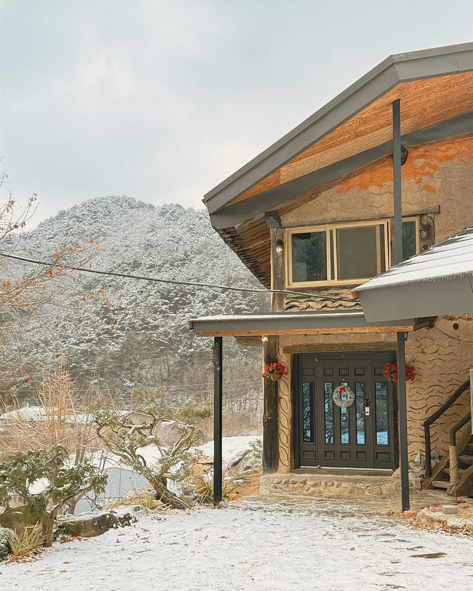
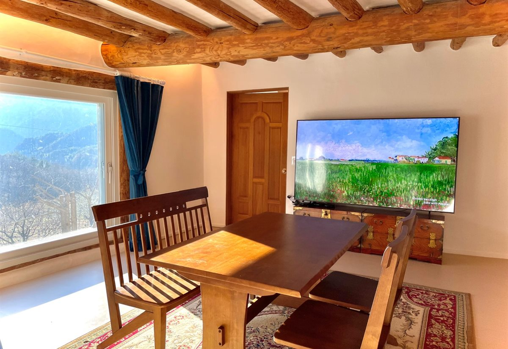
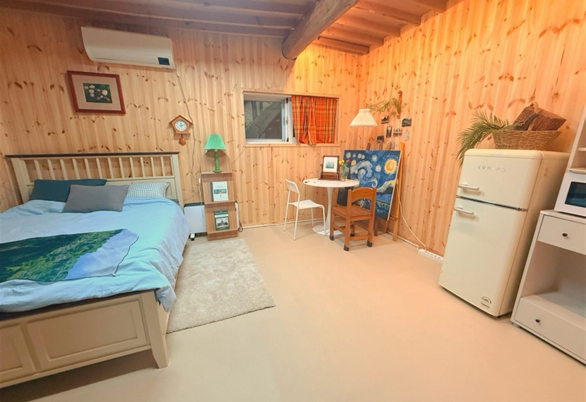
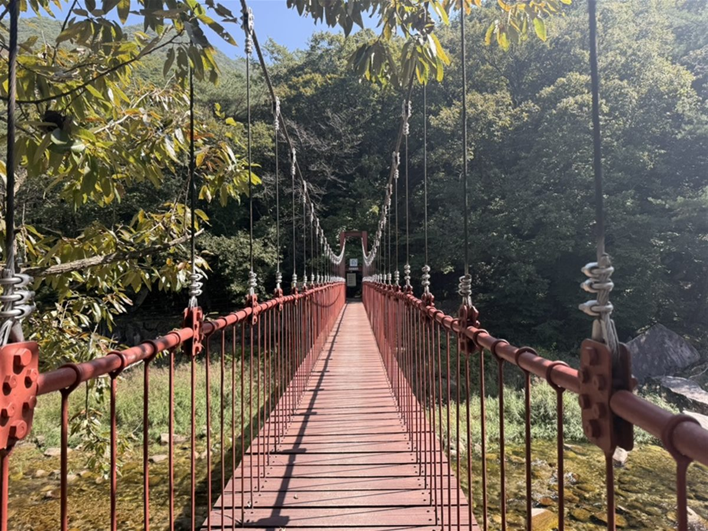
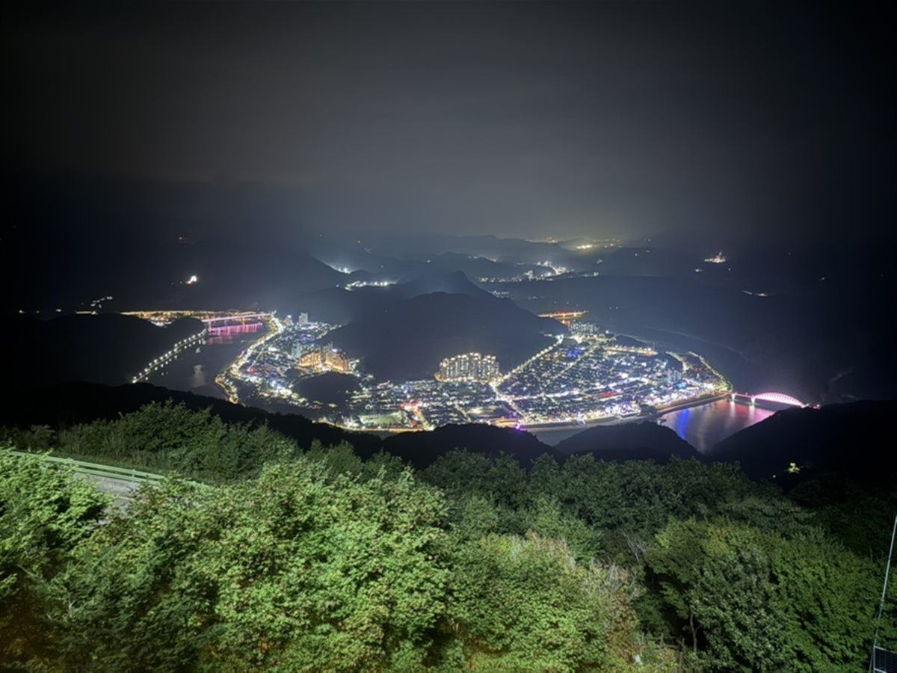
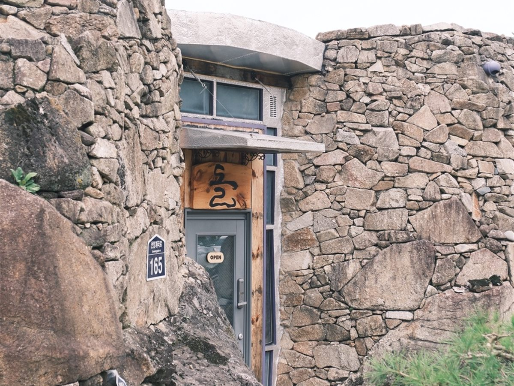

土
Earth · 흙 토
흙
방곡은 대대로 도자기를 굽던 마을입니다. 가마에 들어가는 그 흙으로 벽을 세웠습니다. 여름에는 서늘하고 겨울에는 온기를 오래 붙잡습니다.
DANYANG · BANGGOK POTTERY VILLAGE
도예가가 직접 지은 단양 방곡도예촌의 독채 한옥.
500평 부지에 하루 한 팀만 머뭅니다.
TOSEOKSANG
Scroll
토석상 土石桑. 이 집을 이루는 세 가지를 그대로 이름으로 삼았습니다.
土
Earth · 흙 토
방곡은 대대로 도자기를 굽던 마을입니다. 가마에 들어가는 그 흙으로 벽을 세웠습니다. 여름에는 서늘하고 겨울에는 온기를 오래 붙잡습니다.
石
Stone · 돌 석
마당을 두른 담은 이 골짜기에서 나온 자연석을 다듬지 않고 그대로 쌓았습니다. 면이 고르지 않아, 그 그림자가 하루 동안 천천히 옮겨갑니다.
桑
Mulberry · 뽕나무 상
마당에 백 년 된 뽕나무가 서 있습니다. 여름이면 가지를 넓게 펴 그늘을 내주고, 가을에는 잎을 다 떨궈 마루까지 햇빛을 들입니다.

평생 흙을 빚어 온 도예가 부모님이 이 땅의 돌과 흙을 손수 쌓아 올린 집입니다. 벽을 바른 흙도, 담과 기단을 쌓은 돌도 사 온 것이 아니라 이 마을에서 나온 것들입니다.
집을 짓기 전 터에서 나온 유물과, 오랜 세월 곁에 둔 도자기 작품이 그대로 놓여 있습니다. 머무시는 동안 이 집은 잠시 사는 미술관이 됩니다.
500평 부지에 하루 한 팀만 받습니다. 옆방도 옆 동도 없어서 문을 열고 나와도 마주칠 사람이 없습니다. 조용히 지내다 가시는 것이 이 집을 가장 잘 쓰는 방법입니다.
1층은 방 셋에 화장실 둘, 400평 마당과 백 년 된 뽕나무 정원, 전통가마를 고쳐 만든 찜질사우나가 있습니다. 2층은 도자기와 그림을 걸어둔 갤러리이자 북카페, 다도실입니다.
건물 전체를 쓰실 수 있어 칠순·팔순 잔치나 동창 모임으로도 많이 찾아주십니다. 상차림 준비도 함께 도와드립니다.
한옥 본채 토석상과, 창 하나에 풍경을 걸어둔 별채 고흐의 방. 500평 부지를 하루 한 팀이 씁니다.

01집 이름을 그대로 가진 본채입니다. 흙벽과 나무 기둥이 마감재에 덮이지 않고 그대로 보입니다. 마당에는 전통가마를 고쳐 만든 찜질사우나가 있습니다.

02창을 크게 하나만 두어 밖의 풍경이 액자처럼 걸립니다. 두세 분이 조용히 묵기 좋은 방입니다.
Private
독채로만 운영합니다. 마당과 마루까지 머무는 동안 전부 한 팀 몫입니다.
Pottery
방곡도예촌 마을 안에 있습니다. 걸어서 공방들을 둘러보실 수 있습니다.
Kiln sauna
도자기를 굽던 전통가마를 고쳐 찜질방으로 씁니다. 겨울에 특히 오래 앉아 계십니다.
Danyang 8
단양팔경의 하나인 중선암이 차로 7분입니다. 소백산 죽령도 멀지 않습니다.
흙벽과 돌담, 백 년 된 뽕나무. 계절마다 다른 얼굴이 됩니다.

차로 7분
단양팔경의 하나. 계곡을 따라 걷는 길이 완만해서 어르신과 아이도 어렵지 않습니다.

차로 30분
남한강이 시내를 감아 도는 야경이 한눈에 들어옵니다. 해가 진 뒤에 올라가야 제맛입니다.

차로 15분
바위를 그대로 안고 지은 건물. 통유리 너머로 계곡을 보며 핸드드립 한 잔 하기 좋습니다.